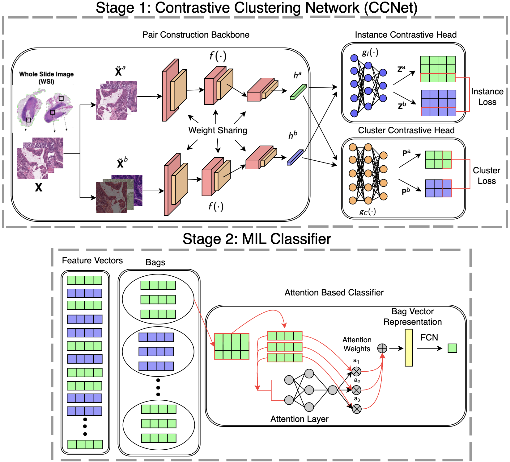
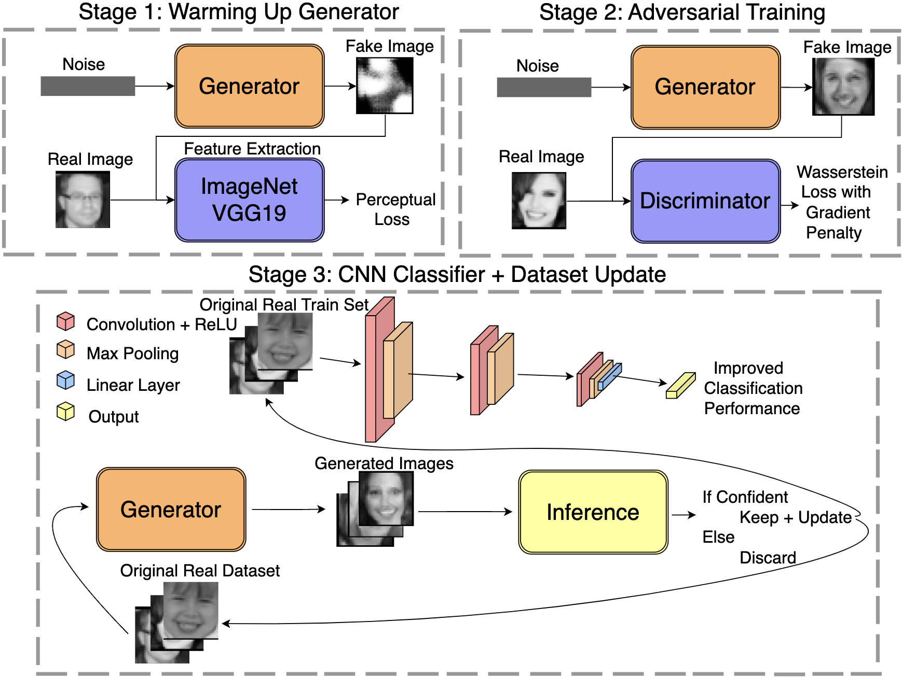

Python
PyTorch
SciKit
SLURM
LaTeX
Contrastive Pre-Training and Multiple Instance Learning for Predicting Tumor Microsatellite Instability
This project focuses on advancing machine learning methods to analyze whole slide imaging (WSI) data for gastrointestinal cancer classification. Specifically, self-supervised learning and multiple-instance learning are employed to perform weakly supervised classification.

Python
PyTorch
SciKit
AWS
Git
Synthetic Data Generation for Deep Learning Model Enhancement
This project focuses on enhancing an emotion recognition classifier by iteratively leveraging a Generative Adversarial Network to synthesize additional training data. Through this iterative process, the model aims to increase the accuracy of classifying emotions.

Tensorflow
HTML
CSS
JavaScript
Firebase
DigitPro99 - Interactive Digit Classification Application
This project is dedicated to digit recognition. The goal is to develop a robust model capable of performing digit detection and the accurate classification of digits from 0 to 99 with plans to expand its capabilities in the future.
See More Projects
Explore more projects on my GitHub profile.